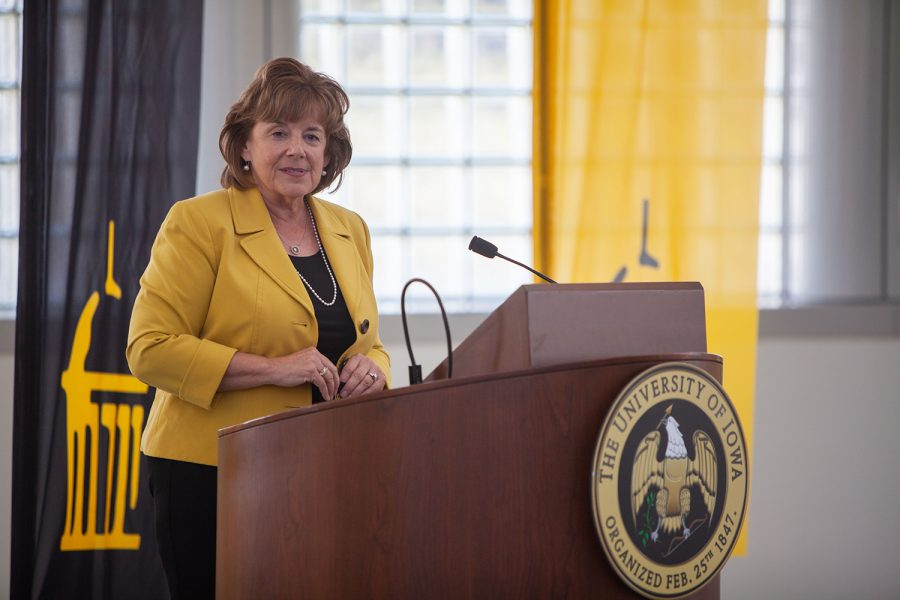

Hakkımızda
Misyon
Bilgi ve teknoloji üreten, geliştiren ve mesleki beceriye dönüştürerek toplum yararına kullanacak nitelikli bireyler yetiştiren bir üniversite olarak, öğrencilerimize; fiziki ve teknolojik altyapı, sosyal ortam, eğitim-uygulama programları ve öğrenme kaynaklarına erişim imkanları sunarak kendilerini; Liderlik ve sosyal yönü güçlü, ne istediğini bilen, özgüveni yüksek, hızlı karar verebilen, duygusal zekâya sahip, hayallerinin peşinde koşan, sistematik düşünce ve entelektüel disipline, etkin öğrenme stratejileri ve çoklu düşünme sistemine sahip; sorgulayıcı ve analitik/inovatif düşünebilen, karmaşık sorunlarla başa çıkabilen ve kompleks problemleri çözebilen, teknolojiyi takip eden, kullanan, geliştirebilen ve programlayabilen, yaşadıkları çağı algılayan, toplumunu tanıyan, etik değerlere ve çevreye duyarlı, mesleki bilgi ve becerilerini dünyanın her yerinde kullanabilecek şekilde profesyonel hayata hazırlanma fırsatı sunmak. Sürdürülebilirlik, yaşantımıza son 20 yılda girmiş olan bir kavram. Küresel iklim değişikliği, çevre kirliliği, ormansızlaşma, kullandığımız enerji kaynaklarının, bitki ve hayvan türlerinin tükeniyor olması gibi sorunlar karşısında artan bilinç, bizi bu noktaya getirdi. Bu kavram bize diyor ki; “Bugünün ihtiyaçlarını, gelecek nesillerin kendi ihtiyaçlarını karşılama fırsatlarını ellerinden almadan gider!” Yani üretim ve tüketim faaliyetlerimizin her aşamasında çevreyi temiz tutma ve kaynakları az kullanma konusunda sorumluluklarımız var.
Vizyon
Beylikdüzü Üniversitesi’nin vizyonu eğitim, öğretim ve araştırmada öncü konumuyla geleceği şekillendiren bir üniversite olmaktır. Eğitim ve öğretim deneyimini yenilikçi ve yaratıcı yaklaşımlarla zenginleştirmek, bilim, araştırma, yaratıcılık, yenilikçilik kültürünü güçlendirerek dünyanın lider araştırma üniversiteleri arasında yer almak,akademik, bilimsel ve kültürel faaliyetlerimizle daha iyi bir geleceğin şekillenmesine katkıda bulunmak, vizyonumuzun ana ögelerini oluşturmaktadır.